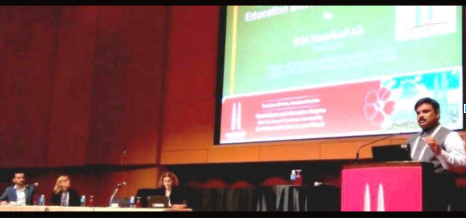

Dr. P. M. Naushad Ali Honoured With Teaching Excellence Awards 2018
An award is something given to a person in recognition of his excellence in a certain field. Teaching Excellence Awards 2018 (TEA - 2018) was an effort of MT Research and Educational Services (MTRES) in association with Buzzingg and Indian Achievers Story to recognition the best teachers (Nation Builders) for their special contribution in respective domain. Meet one of the awardees, Dr. P. M. Naushad Ali who has been honoured with TEA-2018 as Outstanding Teacher.
Dr. P. M. Naushad Ali was honoured with MTRES Teaching Excellence Award 2018
Coming from a very humble background, Dr. P. M. Naushad Ali born on the 20th of May 1972 is currently designated as a Professor in the Department of Library and Information Science, Aligarh Muslim University, Aligarh. An astounding career graph which has been built by him in the long term of his legendary employment sphere has become a source of inspiration for terrifically talented individuals who are in the guidance of this heroic person. He passed BLISc and MLISc from Aligarh Muslim University, Aligarh and University of Calicut, Calicut respectively. Conspicuously, he has also obtained Ph.D in Library & Information Science from University of Lucknow, Lucknow. An extremely talented individual with phenomenally talented skills which has been able to serve the Aligarh Muslim University on the posts of Lecturer, Senior Lecturer, Reader, Associate Professor and professor since 1996. Dr. Ali has more than two decades experience of teaching and research experiences. Mindful areas which this fabled person has interests in are viz. Information Management, Knowledge Management, E-learning and E-Publishing. An auspicious researcher and voracious writer Dr. Ali is the author of 5 books and over 75 research papers in various national and international journals and conference proceedings. Ten Ph.Ds, 2 M.Phil degrees and 65 MLISc Dissertations have been awarded under his supervision and guidance. He has presented about forty research papers in national and international conferences and seminars.
Project presentation on LIS Learning in the 84th IFLA World Library and Information Congress, Kuala Lumpur, Malaysia
Recently, Dr. Ali had received invitation to present his project on LIS learning (http://lislearning.in/ ) in the 84th IFLA World Library and Information Congress held at Kuala Lumpur, Malaysia in August, 2018. Dr. Ali also presented a research paper in the International Conference on Knowledge, held at Portsmouth, London, UK. He delivered a good number of Invited talks in national and international conferences and seminars. He has successfully completed six research projects funded one each by Department of Science and Technology (DST), Indian Council of Social Science Research (ICSSR) and Indian Council of Cultural Relations (ICCR) and three by University Grants Commission. He was appointed as the Deputy Coordinator of the project "Knowledge Management in Libraries" sanctioned by UGC under SAP (DRS-1) scheme. He is the Editor-in-Chief of Journal of Knowledge and Communication Management (JKCM). Apart from Lislearnig portal, Prof. Ali has also developed another portal namely Subject Information Gateway in Information and Technology (http://www.itsubjectgateway.in) which has been widely accepted by professionals from more than 130 countries. He has also honored with Visiting Fellowship under Indo-French Cultural exchange Programme of Indian Council of Social Science Research (ICSSR), New Delhi to visit France for a period of one month to conduct short term research on Knowledge Management in 2008. He has also received HERMES Fellowship to pursue Post Doctorate (PDF) in France in 2009. Dr. Ali is also a recipient of travel grants from IFLA, The Hague and DGI, Germany. He has been an avid convener / organizer of 21 conferences and workshops related to Library and Information Science in and outside of Aligarh Muslim University. Some of his papers have conferred with Best Paper Awards. For International academic assignments Dr. Ali has visited various countries including France, Germany, U.K. and Malaysia in the years 2008, 2006, 2015 and 2018 respectively. He also served as Chairman, Department of Library and Information Science, AMU during the period 2009-2012. Prof. Ali is also an active member of national and international professional bodies like International Council of Knowledge Management (ICKM), International Association of Computer Science and Information Technology (IACSIT), American Society for Research (ASR), ISKO, ILA, IASLIC, IATLIS, IASS etc. A person of this caliber can be a source of inspiration and at this age has achieved this great feat which is absolutely commendable. We would be extremely honored to congratulate Dr. P. M. Naushad Ali for his matchless work in his field of expertise.